|
2010年1月环洞庭湖图片日记
day6(part A), 2010年1月31日
南县 - 华容县
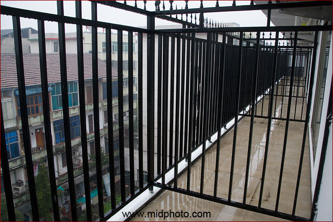
宾馆的阳台虽然大，但这种隔断很像坐牢
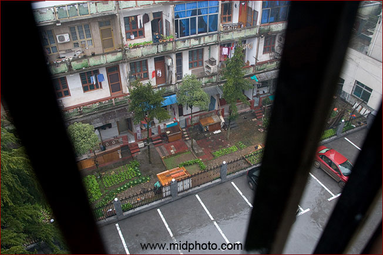
昨夜大雨。红色标致孤独的停在下面。这个酒店应该是南县最豪华的，单间价格只要150元倒是不贵，但才开张两天，房间的油漆味重得很，我觉得呼吸都有点困难。
早上去退房，服务员说地毯上有个烟洞。老板说我们是第一个入住这个房间的客人，那一定是我干的，要赔一百元。我很生气，我只在厕所抽了一根烟，怎么可能房间地毯被烧？幸好小言昨晚上QQ的时候发现早已有人在房间用过电脑，键盘上还有烟灰。原来老板的亲戚在里面玩过。最后老板说算了，没有赔钱。一百块钱不多，但俺被冤枉，觉得很不爽。
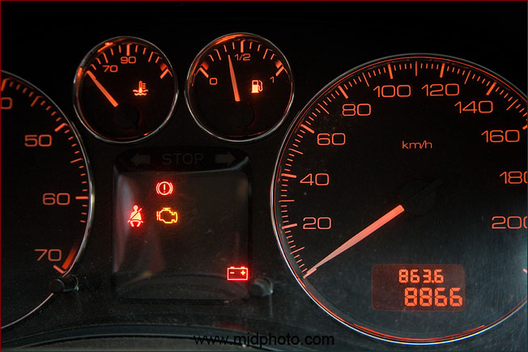
昨日行程 8866 - 8709 = 157公里
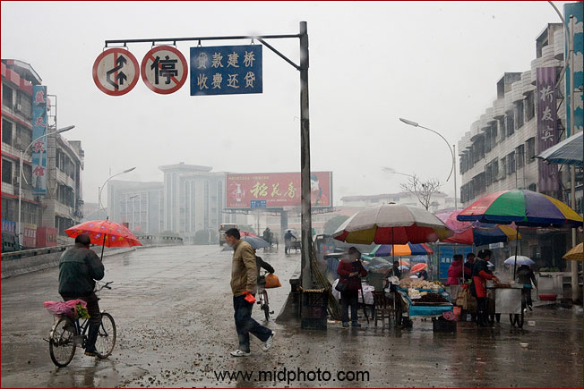
南县县城。出来就上桥。这条河是藕池河东支。
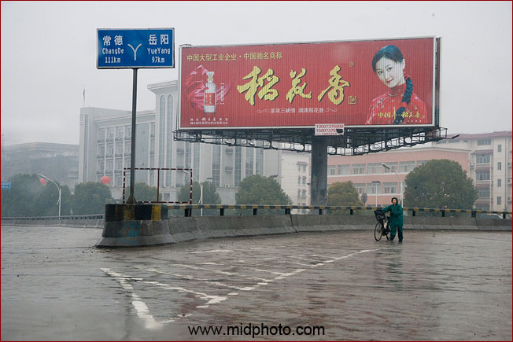
右转去岳阳方向
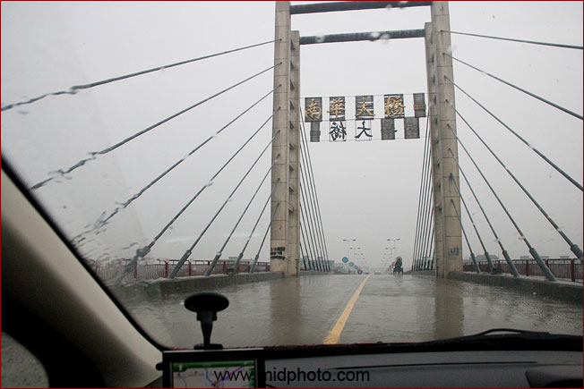
南华大桥
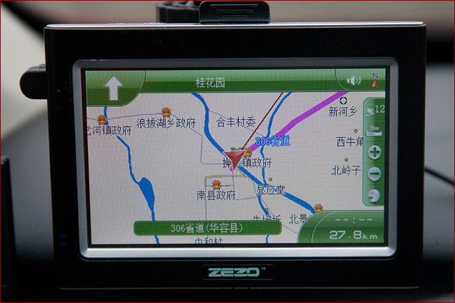
过了桥就是华容县境内了
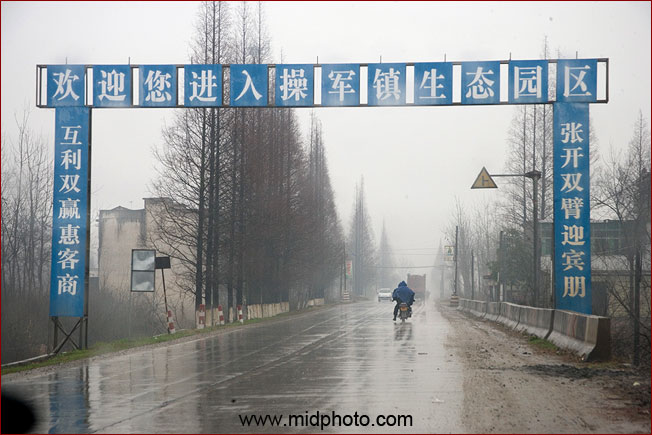
操军镇
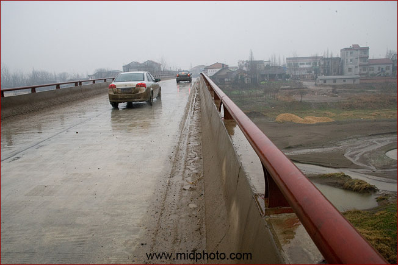
又是一座桥。
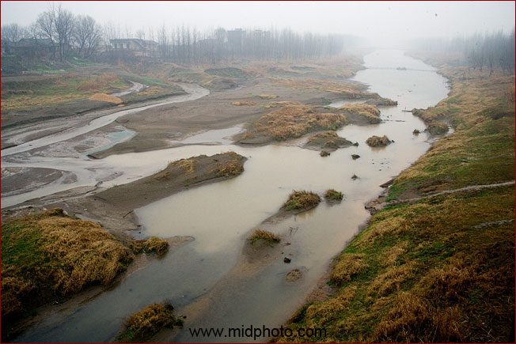
桥下按地图来看应该是藕池河的另外一个分支。没什么水。
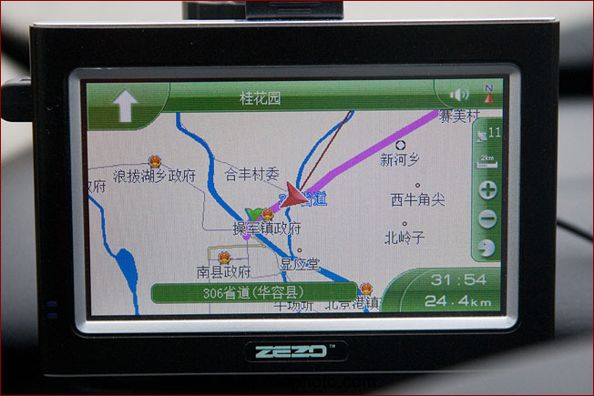
这是在桥上的GPS显示
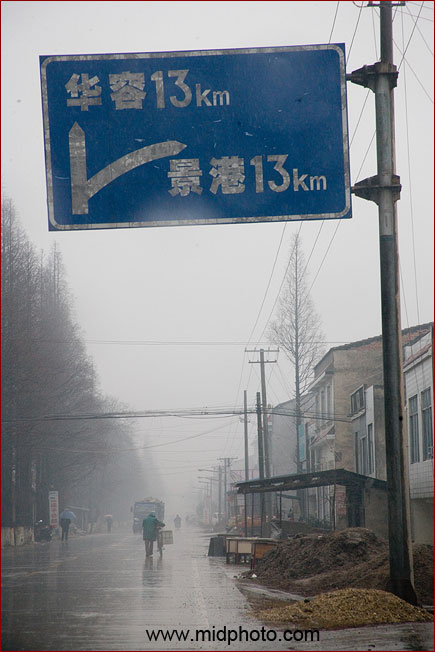
顺着省道204走。离华容县城只有13公里了。
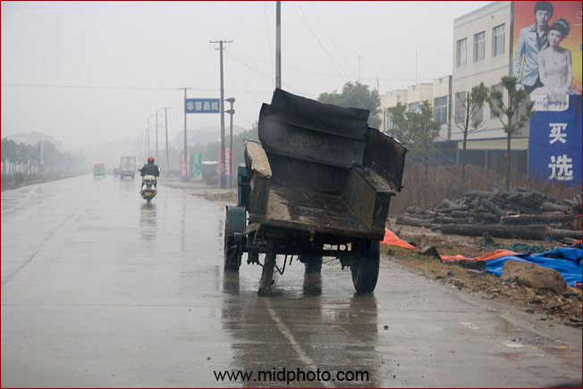
发现一辆怪异的拖拉机
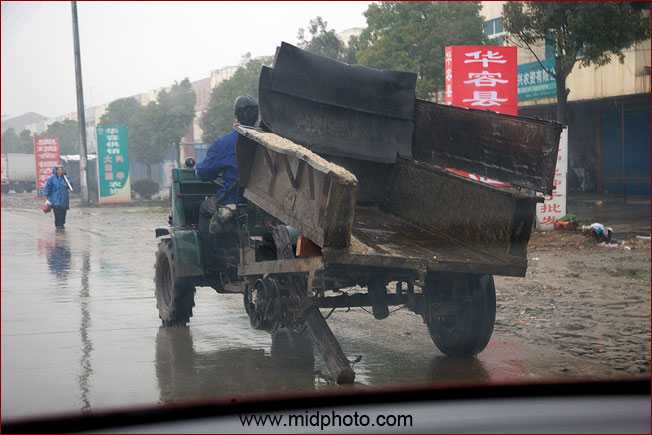
木棒为轮。牛啊。
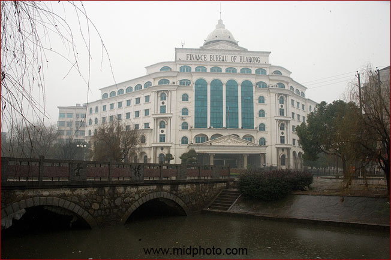
华容县财政局，貌似白宫
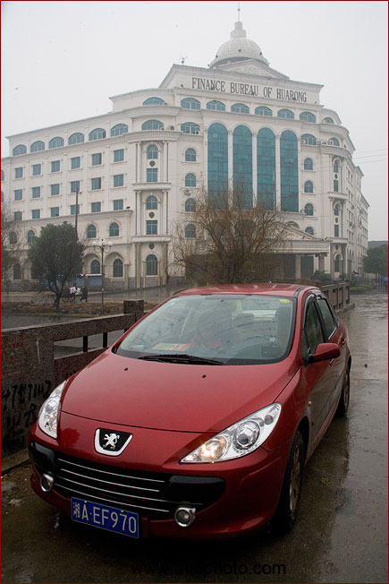
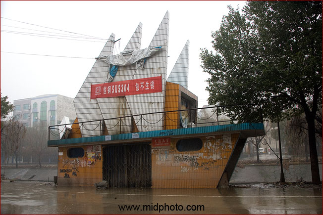
华容县。这个建筑是什么呢？
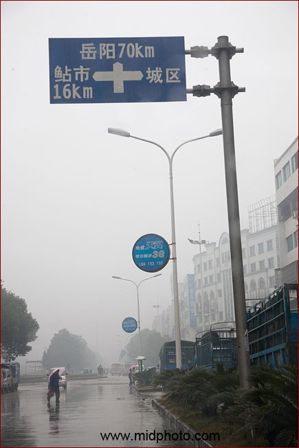
华容离岳阳只有70公里，看来今天到岳阳没问题
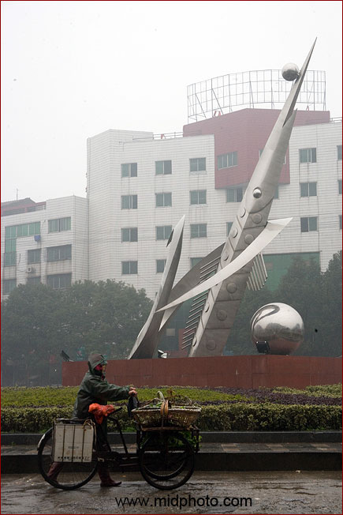
这个雕塑是鱼米之乡的意思？
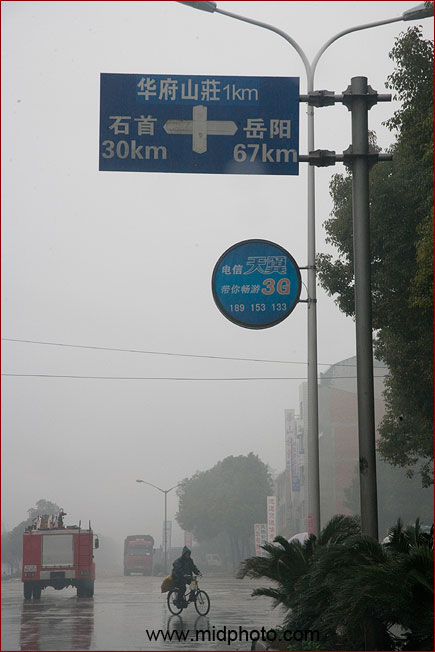
十字路口。左转去湖北石首市30公里。我右转去岳阳。
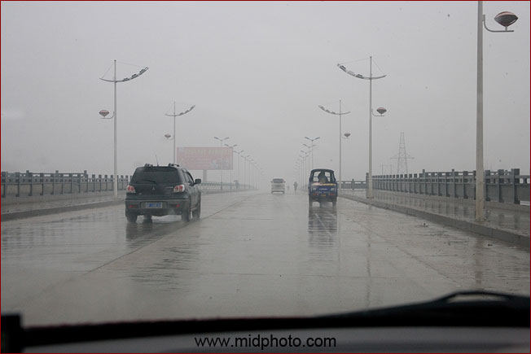
又是一座桥。这桥下面应该是华容河
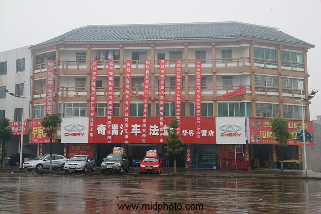
路遇奇瑞汽车华容店。其实我很喜欢奇瑞A3那个车的样子。
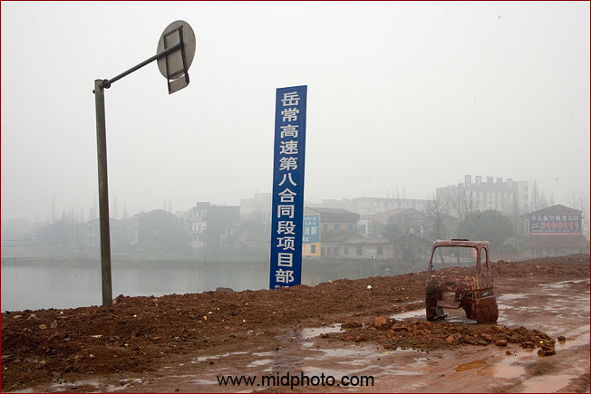
岳阳到常德的高速公路即将来临
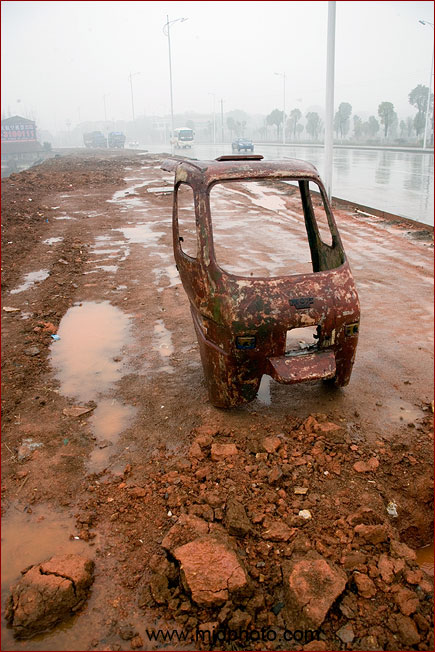
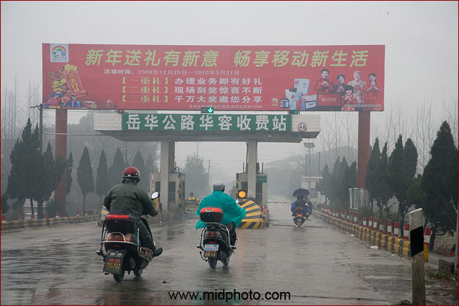
岳阳到华容的公路收费十元
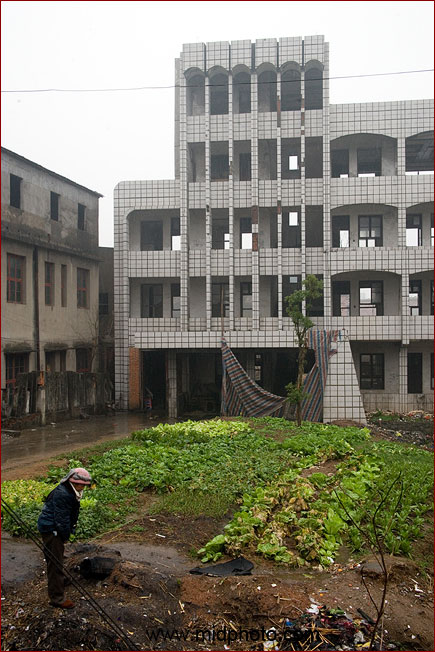
撒尿人
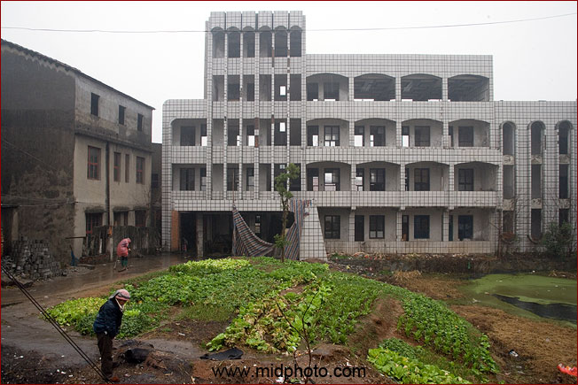
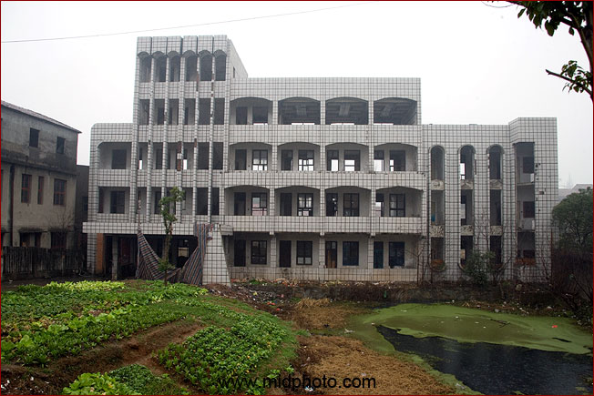
这么新的楼房，废弃了？
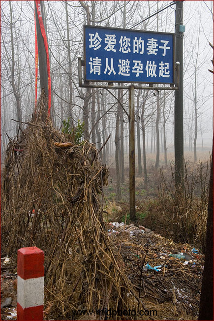
珍惜女人，正确避孕
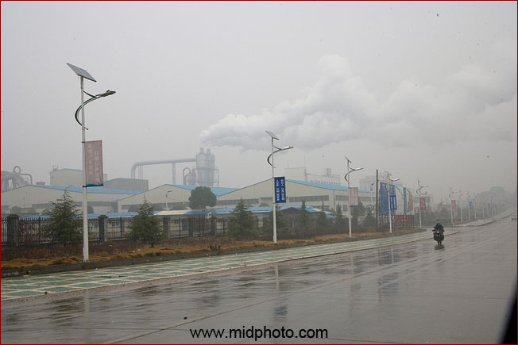
华容经济开发区
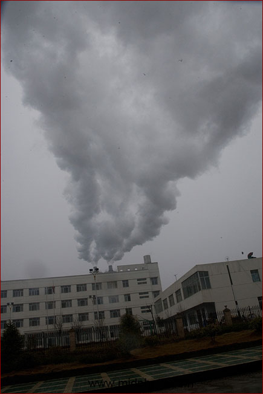
开发区黑烟滚滚
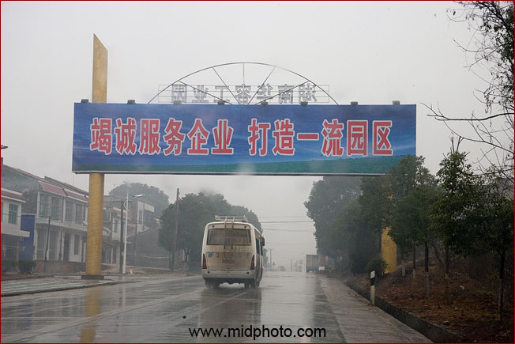
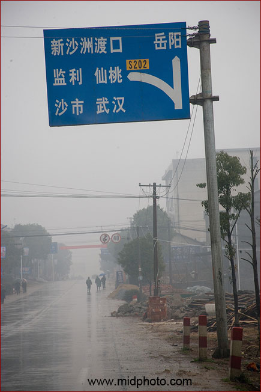
左拐去武汉，前行去岳阳
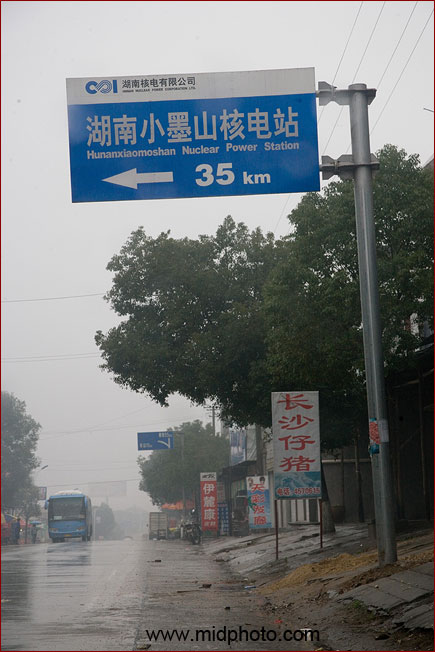
小墨山是湖南第一座核电站。人类对核电的态度相差很大，法国和日本大力推行核电，德国和瑞典将在2015年前关闭所有的核电站。核电并不完美，我们只是不得已而为之，其最大问题是核废料的处理以及潜在的运行危险（当然这种危险系数很小）。就算完全没有危险，核燃料（铀矿石）也是有限的。
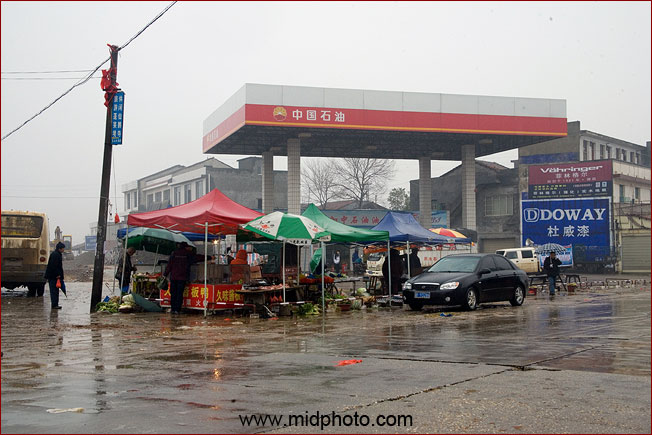
油站附近生意不错
|